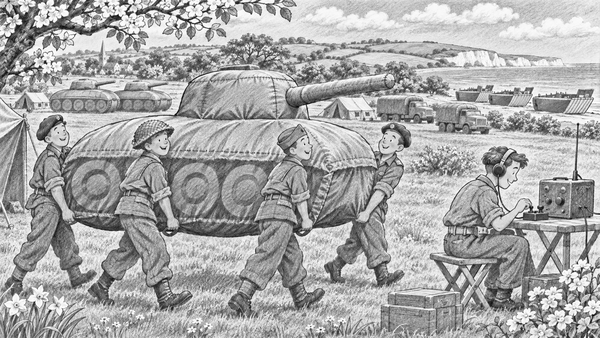

It was spring, 1944.
World War Two was still raging.
Allied leaders had a huge job to do.
They planned to land an army in Normandy, in France.
But the German army was watching.
If it knew the real place, it could send more troops there.
So the Allies made a secret plan.
They would build an army that was not there!
The trick was called Operation Fortitude.
It pointed German eyes towards Calais.
Calais was across the narrowest part of the English Channel.
It looked like a likely place for an invasion.
In south-east England, workers set out pretend tanks.
From high above, they looked real.
Yet some were light enough for a few people to move.
Lift. Step. Lift. Step.
There were dummy landing craft near the coast.
There were pretend vehicles in fields.
There were even signs of a busy camp.
Decoy fact: A decoy is something made to draw attention away from the real thing. A dummy tank could fool an observer in an aircraft.
But a large army makes more than tracks and tents.
It also sends many radio messages.
So radio teams tapped out false signals.
Tap-tap. Beep. Tap-tap.
The messages made the empty fields sound busy.
Double agents passed on false information too.
Each little clue helped the same story.
A great army seemed to be waiting near Calais.
It even had a famous leader.
General George Patton was linked to the pretend force.
German leaders knew his name.
That made the trick easier to believe.
Signal fact: The fake army used bogus radio traffic. Listening stations could hear the signals, even though the units they described did not exist.
Then came 6 June 1944.
The real Allied landings began in Normandy.
Ships crossed the sea.
Real soldiers went ashore.
Still, German leaders feared another landing near Calais.
They kept forces ready there.
This helped slow the flow of German reinforcements to Normandy.
The pretend army never marched.
Its tanks had no engines.
Its radio messages told of units that were not there.
Yet the trick had done a very real job.
Canvas, wood, air and clever signals had helped protect the true plan.
Sometimes a great mission needs courage.
Sometimes it needs strength.
And sometimes it needs a brilliant trick.
1. What helped make the pretend army look real from above?
2. Why did radio teams send false messages?
3. Where did the real Allied landings begin?